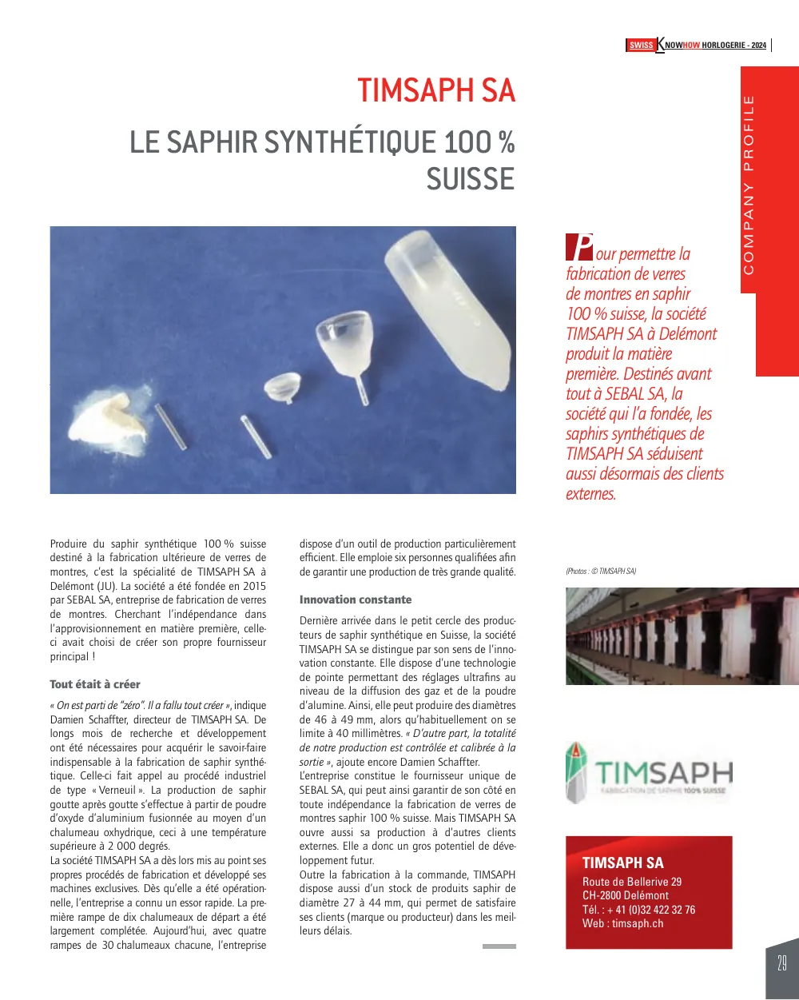
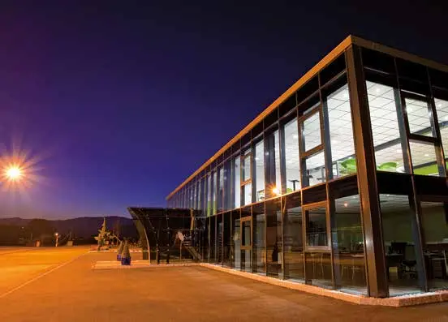
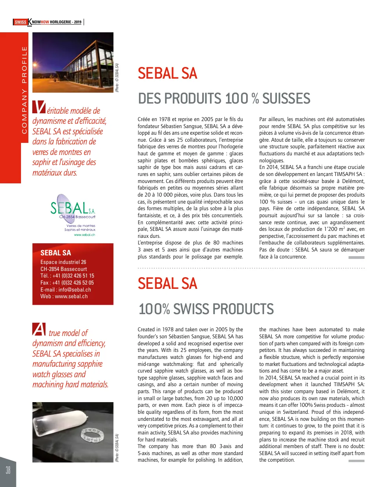
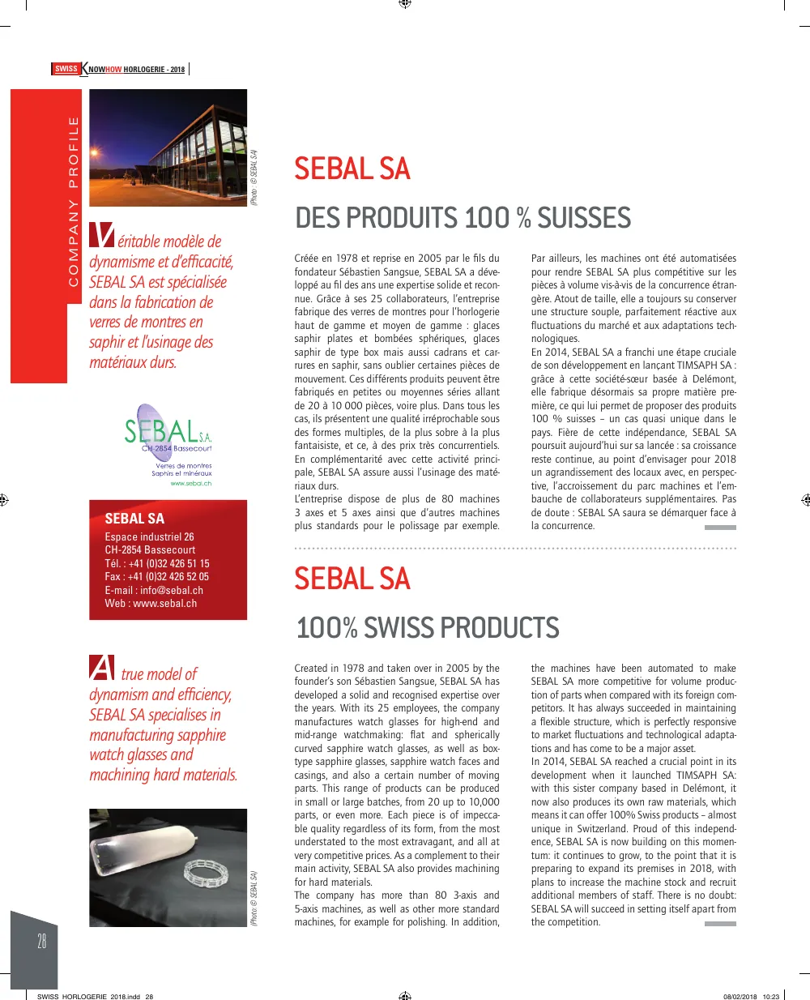
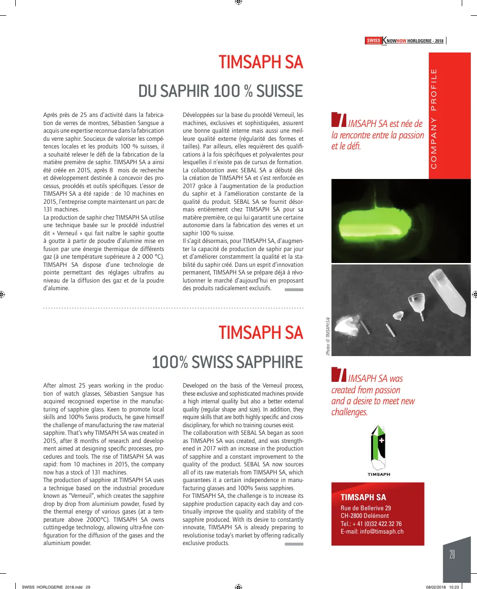
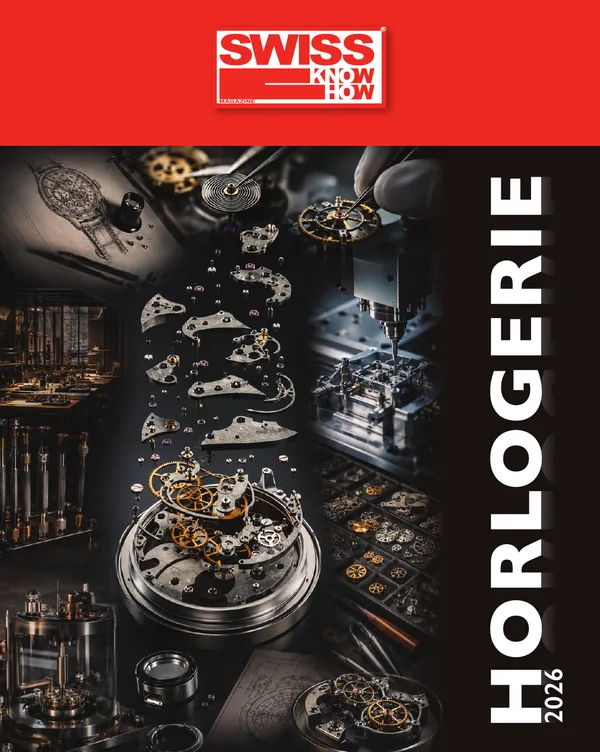

Publireportage · Swiss Knowhow – Horlogerie 2026
Sebal SA – Un verre de saphir local et bas-carbone
Installée à Bassecourt, SEBAL incarne le renouveau d’un savoir-faire manufacturier d’exception. Indépendante et familiale, l’entreprise s’impose comme une référence dans le milieu ; elle est l’une des rares à produire localement et de façon indépendante le verre de saphir.
SEBAL, entreprise spécialisée dans la fabrication de verres saphirs, se distingue par sa production locale et centralisée. Nourrie par ses appuis locaux, l’entreprise a bénéficié d’un savoir-faire artisan et d’ingénierie d’excellence hérités du patrimoine horloger de la région. Grâce à sa taille humaine, elle a su rester hyper-spécialisée dans son domaine et garante de sa production.
Afin de sécuriser sa production, SEBAL travaille de pair avec TIMSAPH, sa société sœur, pour assurer l’achat de matière première et réaliser les premières étapes de transformation. Cette internalisation représente un atout majeur dans l’industrie horlogère; elle est garante d’un niveau d’excellence rare dans le secteur, d’une autonomie et d’une transparence qui séduit ses clients, parmi lesquels se comptent les plus grandes marques. Pour Sébastien Sangsue, directeur de SEBAL, la confiance est clef : « avec la réalité géopolitique actuelle et dans un marché globalement opaque et instrumentalisé, il est essentiel d’établir une relation de confiance avec ses clients. Tout l’enjeu est de pouvoir prouver la conformité de notre proposition. Nos clients sont avertis, ils croient en notre démarche et reconnaissent notre fiabilité. »
La décarbonation comme levier de croissance
SEBAL se distingue par son niveau d’excellence et son engagement ; elle fait la promesse d’une production Swiss made en voie de décarbonation sur l’ensemble de sa chaîne. « Nous sommes engagés dans une politique de décarbonation ambitieuse; la nôtre mais aussi celle de nos partenaires. Lorsque nous réalisons un diagnostic énergétique, nous remontons la chaîne de valeur le plus loin possible, depuis la matière brute jusqu’au produit fini.» explique Sébastien Sangsue. Pour réaliser son bilan carbone, SEBAL a mandaté un cabinet de conseil. Grâce à cette étude, l’entreprise sait désormais quels leviers activer pour décarboner efficacement sa chaîne de production. « Nous savons à présent que la phase de transformation constitue la principale source d’empreinte carbone. Celle-ci a été fortement réduite au cours des deux dernières années, et plusieurs projets d’amélioration sont en cours pour encore alléger ce procédé. » Dans le but d’améliorer ses pratiques, SEBAL a défini une trajectoire de réduction de ses émissions et a intégré ses fournisseurs et prestataires dans sa stratégie de décarbonation. Son but : améliorer sa compétitivité, répondre aux attentes des marques soucieuses d'améliorer l'impact carbone de leurs montres et anticiper les réglementations futures.
Texte paru dans Swiss Knowhow – Horlogerie 2026, p. 26, tel que publié dans l'édition imprimée. En cas d'écart, la version imprimée fait foi.
Photos
Articles
 Publireportage · texte intégral
Publireportage · texte intégralSebal SA – Un verre de saphir local et bas-carbone
Production indépendante de verres saphir à Bassecourt
 Publireportage · texte intégral
Publireportage · texte intégralTimsaph SA – Horlogerie responsable ; le saphir devient vertueux
Production de saphir 100 % suisse à faible impact carbone
Sebal SA – Producteur de verres saphir entièrement suisses
Glaces de montres en saphir 100 % suisses à Bassecourt
Timsaph SA – Du saphir synthétique 100 % suisse avec une empreinte environnementale unique
Durabilité et sécurité d'approvisionnement à Delémont
 Publireportage · texte intégral
Publireportage · texte intégralSebal SA – Producteur de verres saphir entièrement suisses
Glaces de montres en saphir 100 % suisses à Bassecourt

Publireportage · texte intégralTimsaph SA – Le saphir synthétique 100 % suisse
Production de saphir synthétique à Delémont
 Publireportage · texte intégral
Publireportage · texte intégralSebal SA – Producteur de verres saphir entièrement suisses / Timsaph SA – Le saphir synthétique 100 % suisse
Glaces de montres et matière première produites dans le Jura
Sebal SA – Producteur de verres saphir entièrement suisses
Glaces de montres en saphir à Bassecourt

Publireportage · texte intégralSebal SA – Producteur de verres saphir entièrement suisses / Timsaph SA – Le saphir synthétique 100 % suisse
Verres de montres et matière première produits dans le Jura

Publireportage · texte intégralSebal SA – Des produits 100 % suisses / Timsaph SA – Du saphir 100 % suisse
Verres de montres en saphir et production de matière première dans le Jura

Publireportage · texte intégralSebal SA – Des produits 100 % suisses
Sebal SA – 100% Swiss products

Publireportage · texte intégralTimsaph SA – Du saphir 100 % suisse
Timsaph SA – 100% Swiss sapphire
Parutions
- Swiss Knowhow – Horlogerie 20262026 · page 26PDF

- Swiss Knowhow – Horlogerie 20252025 · page 24PDF

- Swiss Knowhow – Horlogerie 20242024 · page 28PDF

- Swiss Knowhow – Horlogerie 20222022 · page 42PDF

- Swiss Knowhow – Horlogerie 20212021 · page 32PDF

- Swiss Knowhow – Horlogerie 20202020 · page 42PDF

- Swiss Knowhow – Horlogerie 20192019 · page 28-29PDF

- Swiss Knowhow – Horlogerie 20182018 · page 28PDF